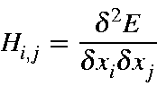
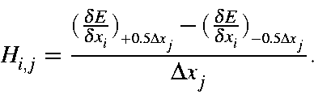
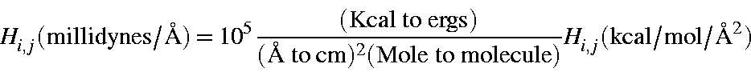
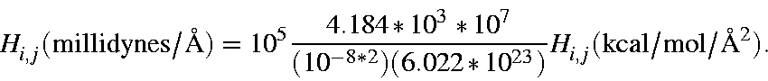
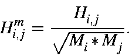
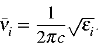

Next: Mechanism of the
Up: Calculation of Vibrational
Previous: Calculation of Vibrational
The elements of the Hessian are defined as:

and are generated by use of finite displacements, that is, for each atomic
coordinate xi, the coordinate is first incremented by a small amount, the
gradients calculated, then the coordinate is decremented and the gradients
re-calculated. The second derivative is then obtained from the difference of
the two derivatives and the step size:

This is done for all 3N Cartesian coordinates. Because the Hessian is
symmetric, that is
Hi,j=Hj,i, the random errors that occur in the
gradient calculation can be reduced (by a factor of (1/2)1/2)
by re-defining
the Hessian as:
A call to the energy - gradient function COMPFG will generate the
gradients in kcal/mol/Ångstrom at a given geometry. These can then be
converted into millidynes/Ångstrom (or 105 dynes/cm) as follows:

or

Diagonalization of this matrix yields the force constants of the system.
In order to calculate the vibrational frequencies, the Hessian matrix is first
mass-weighted:

Then the Hessian is converted from millidynes per Ångstrom to dynes per
centimeter by multiplying by 105.
Diagonalization of this matrix yields eigenvalues, e,
which represent
the quantities
(k/m)1/2 ,
from which the vibrational frequencies can be
calculated:

Next: Mechanism of the
Up: Calculation of Vibrational
Previous: Calculation of Vibrational
J. J. P. Stewart
Fujitsu Ltd. 2001